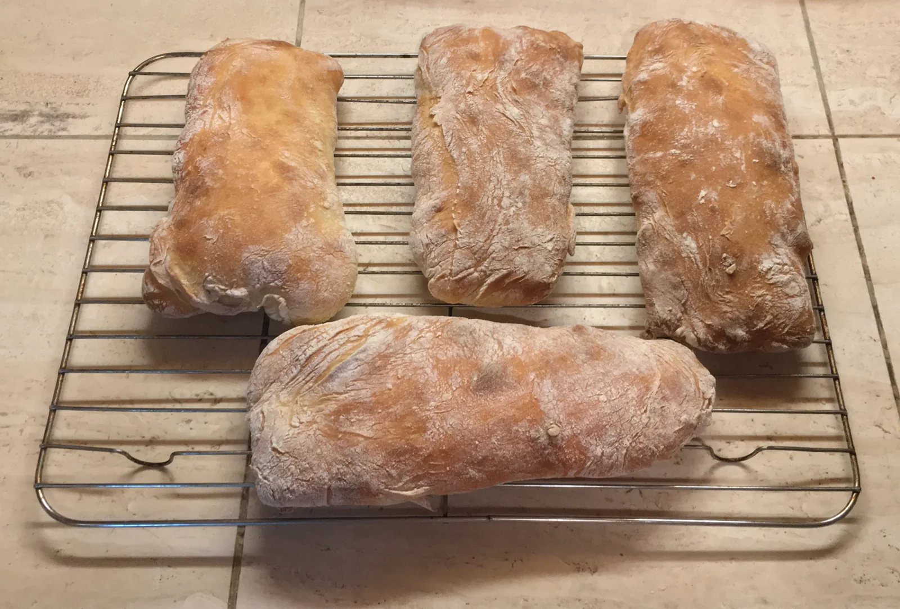

Ein Pantoffel zum Essen
„Ciabatta“ heißt auf Italienisch Pantoffel. Gemeint ist die eher flache, breite und längliche Brotform.
Brotporträt 06 / 07
Viel Luft. Viel Aroma. Ein kleines Stück Italien.
Die Geschichte entdecken
Herkunft & Geschichte
Ciabatta wirkt wie ein uraltes Landbrot, ist in seiner heutigen Form aber ein vergleichsweise junger Klassiker. Seine Entwicklung wird auf das Jahr 1982 und den Bäcker Arnaldo Cavallari im venezianischen Adria zurückgeführt. Das neue Brot sollte auch eine italienische Antwort auf das beliebte französische Baguette sein.
Der Name bedeutet auf Italienisch „Pantoffel“ und spielt auf die flache, längliche Form an. Von Venetien aus verbreitete sich Ciabatta international. Heute findet man zahlreiche Varianten – als großer Laib, als Brötchen und mit unterschiedlichen Vorteigen. Gemeinsam ist ihnen meist ein weicher, wasserreicher Teig.
Zum Weiterlesen: Hintergrund: Herkunft des Ciabattas ↗Zuletzt aufgerufen am
Von außen nach innen
Tomaten, Basilikum und gutes Olivenöl passen ebenso wie gegrilltes Gemüse oder eine sommerliche Suppe.
Eine Scheibe Wissen
„Ciabatta“ heißt auf Italienisch Pantoffel. Gemeint ist die eher flache, breite und längliche Brotform.
Der hohe Wasseranteil trägt zur typischen offenen Porung bei. Solche Teige werden vorsichtig behandelt.
Viele Rezepte arbeiten mit einer Biga, einem italienischen Vorteig. Es gibt aber auch andere Teigführungen.
Vom Lesen zum Backen
Ein Ciabatta mit Vorteig und Olivenöl – Zeit zum Reifen gehört dazu. Das passende Rezept „Ciabatta“ findest du auf Chefkoch.
Rezept auf Chefkoch ansehen ↗Externe Rezeptseite · öffnet in einem neuen TabZuletzt aufgerufen am